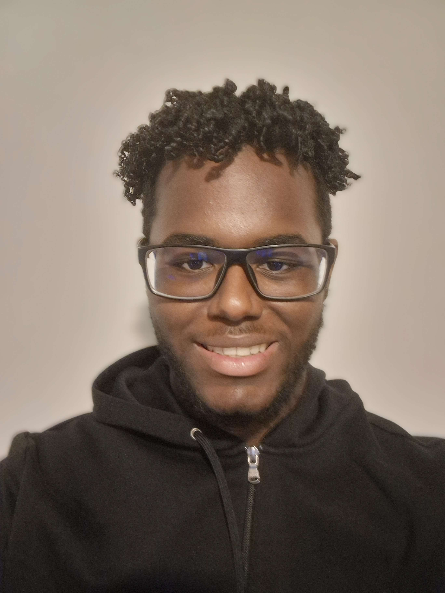
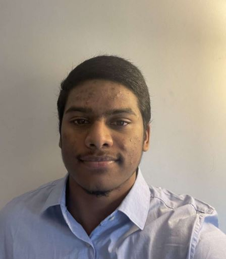
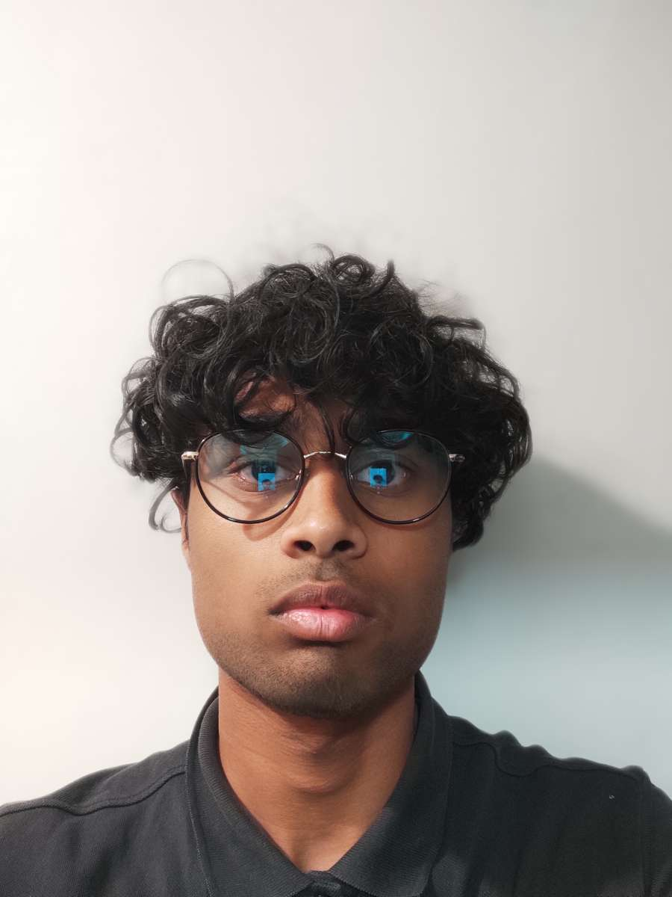
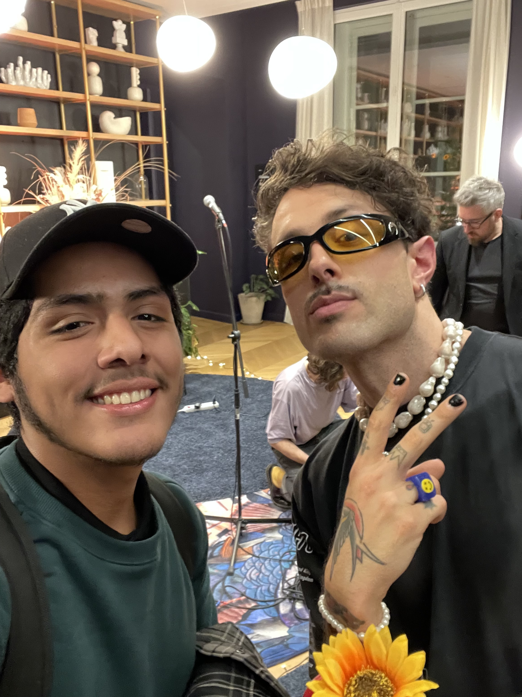
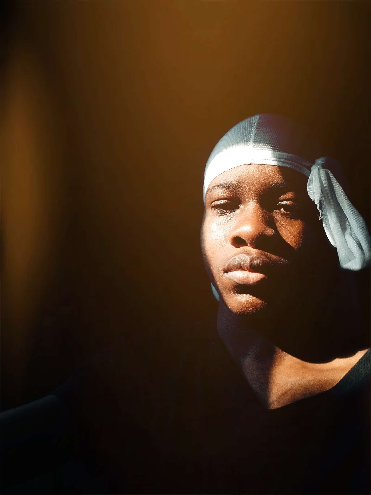

En tant que chef de projet d'une équipe de 7 personnes, mon rôle est d'orchestrer et de superviser tous les aspects de la préparation d'un site web pour l'artiste Michel Bassompierre, tout en promouvant l'événement de l'année 2024. Ma responsabilité principale est de coordonner les différentes compétences de mon équipe, en m'assurant que chacun comprend clairement les objectifs et les délais du projet. Je travaille en étroite collaboration avec les développeurs, les designers, les pour garantir que toutes les étapes du processus de création du site web sont réalisées avec excellence. En tant que chef de projet, je suis le point de contact principal entre l'artiste Michel Bassompierre et notre équipe. Je veille à ce que ses attentes et ses besoins soient bien compris et pris en compte dans la conception du site. Je facilite également la communication entre l'artiste et les membres de l'équipe, en m'assurant que toutes les informations pertinentes sont transmises efficacement. L'une de mes tâches les plus importantes est de m'assurer que le site web reflète fidèlement le talent et l'esthétique artistique de Michel Bassompierre. En somme, en tant que chef de projet, mon objectif ultime est de collaborer avec mon équipe pour créer un site web exceptionnel qui mette en valeur les sculptures de Michel Bassompierre et promeuve avec succès l'événement de l'année 2024. Je suis passionné par mon rôle et déterminé à réaliser ce projet avec succès, en offrant une expérience en ligne captivante et mémorable pour les visiteurs du site et en contribuant à la renommée de l'artiste et de son événement
En tant que graphiste web, je suis responsable de la conception et du développement des interfaces web. Je m'efforce de créer des expériences utilisateur intuitives et agréables, en utilisant des éléments graphiques, des typographies appropriées et des choix de couleurs harmonieux. Je m'assure que le design du site web est cohérent avec l'identité visuelle de l'artiste ou de l'événement, en créant des visuels accrocheurs et en optimisant la convivialité. Notre objectif commun est de captiver l'auditoire, de transmettre efficacement les informations clés et de laisser une impression durable. Je m'efforce de trouver le bon équilibre entre le design esthétique et la fonctionnalité, en utilisant des visuels percutants et des animations subtiles pour rendre la présentation plus dynamique et engageante.
J’ai été présent dès le début pour la recherche de l’événement ainsi que la prise de contact avec l’artiste.La prise de contact avec l'artiste a été une étape essentielle pour recueillir des informations précieuses sur ses œuvres, sa vision artistique, et les messages qu'il souhaite communiquer à travers ses expositions. Les échanges avec l'artiste nous ont permis à mieux appréhender le contenu et le contexte des expositions à venir. À la suite de cela, je suis intervenu dans la création du site plus précisément dans la partie rédaction du site, qui est une étape crucial qui permet de présenter le site de manière attrayante et informative.
En tant que graphiste spécialisé dans la conception d'affiches et dans la préparation des soutenances, je joue un rôle dans la communication visuelle et la présentation efficace des projets. En tant que graphiste pour les affiches, Je sais comment utiliser les éléments graphiques tels que les couleurs, les typographies, les images et les illustrations pour créer des affiches percutantes qui captent l'attention du public. Mon rôle en tant que graphiste pour les affiches et préparateur de soutenances est de garantir que l'information est présentée de manière claire, attractive et impactante. Mon travail contribue à renforcer l'image de marque, à promouvoir les projets et à faciliter la compréhension des idées.
En tant que développeur du site et graphiste web, mon rôle principal est de travailler sur l'aspect visuel et fonctionnel du site. Je m'assure que le design du site correspond aux besoins et aux objectifs de l'événement qui se déroulera pendant les festivals de Cannes en 2024. En tant que graphiste web, j'ai également la responsabilité de concevoir l'affiche pour l'événement qui se tiendra pendant les festivals de Cannes en 2024. Je travaille sur la création d'un visuel attrayant et captivant qui reflète l'essence de l'événement. Je m'occupe de la conception graphique, du choix des couleurs et des éléments visuels qui seront utilisés dans l'affiche. Mon objectif est de créer une affiche qui attire l'attention du public.
En tant que graphiste web et journaliste, je joue un rôle polyvalent et essentiel dans le monde numérique et médiatique. Mon expertise en design graphique et ma passion pour le journalisme me permettent d'apporter une valeur ajoutée unique à nos travaux. En tant que journaliste, je m’immerge dans des sujets divers et variés, enquêtant, interviewant et recueillant des informations pour créer des contenus informatifs et captivants. En tant que graphiste web et journaliste, je joue un rôle dans la création d'expériences en ligne engageantes et informatives. Je sais comment attirer l'attention du public, susciter l'intérêt et transmettre des messages clairs et impactant. Mon travail contribue à la communication efficace des idées, des informations et des histoires, tout en renforçant la crédibilité et l'attrait visuel des médias numériques.
En tant que chef développeur du site, j’ai un rôle crucial dans la création du site. Ma première tâche a été de créer une première version du site, souvent appelée "croquis" , qui permet d'avoir une première représentation visuelle de l'apparence et de la structure du site. La création de cette première version du site est une étape importante car elle permet à l'équipe de visualiser et d'évaluer l'organisation générale du contenu, la disposition des éléments, ainsi que la navigation du site. Après avoir créé le croquis initial du site, j’ai pu travailler en collaboration avec le reste de mon équipe pour avancer sur l'esthétique du site. L'objectif était de donner au site une apparence moderne, en accord avec les tendances actuelles du design web. Mon rôle en tant que chef développeur du site a été essentiel pour guider l'équipe dans la création d'un site web .